Explore Quebec City
A Brief History
Quebec City was founded by Champlain in 1608 as a French fur-trading post on the St. Lawrence narrows. Ramparts, citadel, and Lower Town stone warehouses record New France, British conquest, and francophone cultural continuity in North America. Plains of Abraham parkland and St Lawrence promenades extend French ramparts above the narrows. Walking routes through the historic centre help visitors relate these monuments to wider patterns of settlement and civic life in Canada.
Attractions Map
Top Sights & Activities
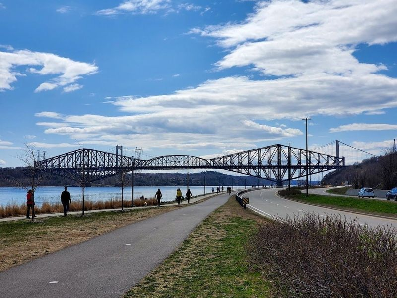
Promenade Samuel-De Champlain
Promenade Samuel-De Champlain is a picturesque 2.7-mile park along the St. Lawrence River, offering unobstructed views of the river and a perfect spot for picnics and sunset watching. The park features play areas for kids, sports facilities, and four distinct sections: wetlands with waterslide access, a lookout point, sports fields, and a cultural focal point. It's an ideal place for walking, running or cycling by the water's edge.
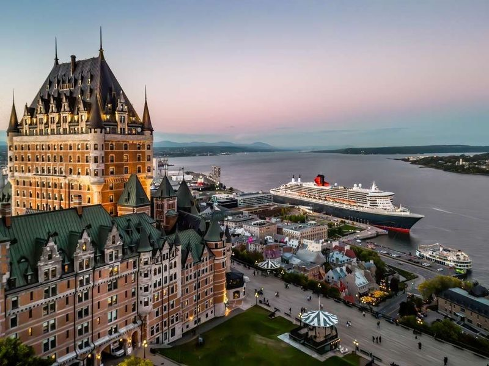
Fairmont Le Château Frontenac
Fairmont Le Château Frontenac is a historic and luxurious hotel located on Cap Diamant, offering views of the St. Lawrence River and Old Quebec. This landmark, opened in 1893 by the Canadian Pacific Railway, has been a popular choice for luxury travelers and notable figures throughout history. Following a $75 million renovation in 2014, the hotel now boasts 611 contemporary rooms adorned with chic furnishings and elegant color schemes.
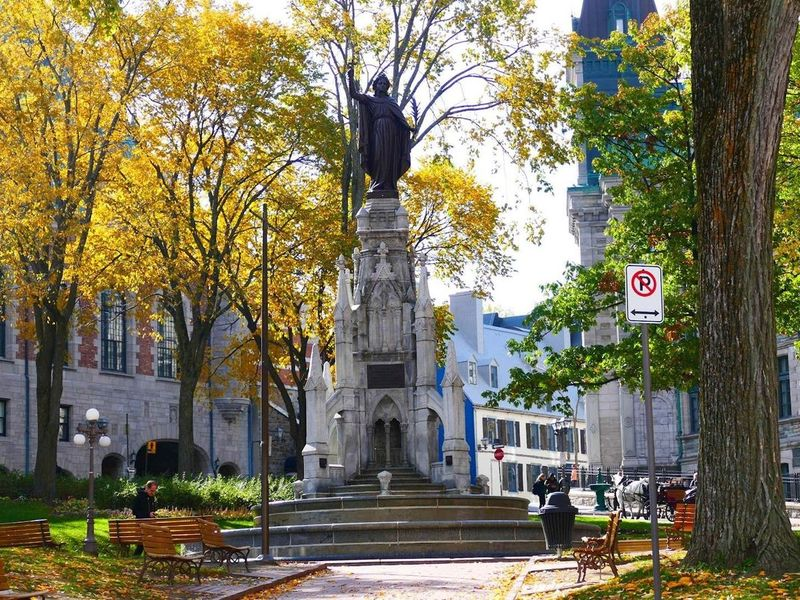
Place d'Armes
Place d'Armes is a leafy plaza In Quebec City's old town. It features charming flower beds, grand buildings, and a striking neo-Gothic monument with a fountain. The square offers great views of the Chateau Frontenac and is an ideal spot for capturing leading lines towards the hotel. Visitors can explore nearby attractions such as Notre Dame de Quebec Basilica and Hotel-de-Ville, or indulge in delicious meals and treats on Rue Saint-Jean.
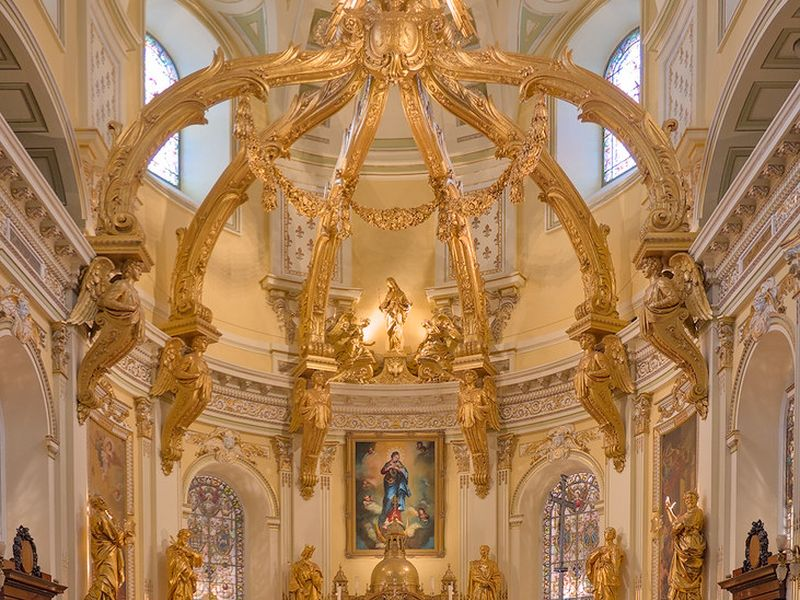
Notre-Dame de Québec Basilica-Cathedral
Notre-Dame de Québec Basilica-Cathedral is listed among principal sites for Quebec City within Canada. Municipal and regional heritage listings document its place in the historic centre and travellers routes through Quebec City. Notre-Dame de Québec Basilica-Cathedral is listed among principal sites for Quebec City within Canada.
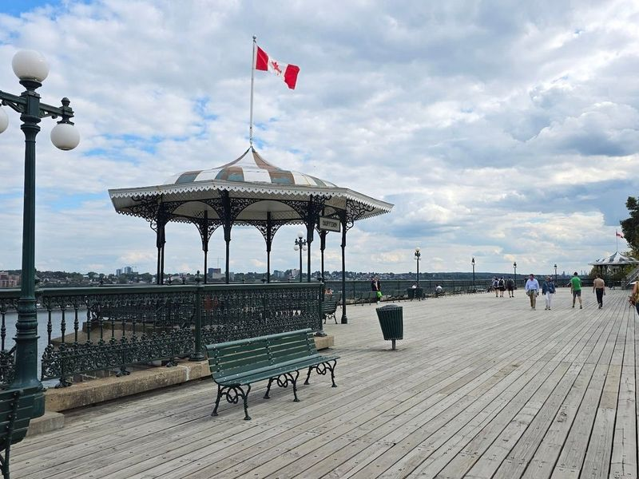
Dufferin Terrace
Dufferin Terrace, also known as Terrasse Dufferin, is a historic wooden boardwalk built in 1859 that offers views of the Saint Lawrence River, Chateau Frontenac, and the Citadel of Quebec. It is a popular spot for both locals and tourists to enjoy leisurely strolls while taking in panoramic city views. In the winter, visitors can experience the famous Terrasse Dufferin Slides toboggan run during the Quebec Winter Carnival.
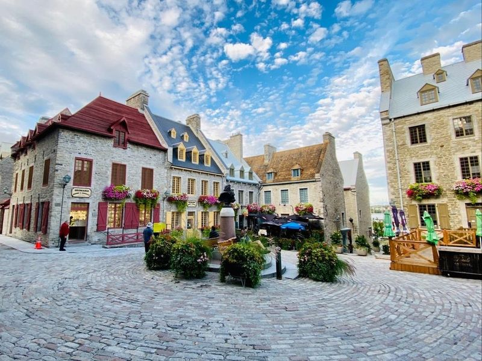
Place Royale
Place Royale in Quebec City, Canada is a charming cobblestoned square surrounded by cafes, shops, and a 17th-century stone church. This historic landmark dates back to the early 17th century and is an integral part of Old Quebec. It was the site where Samuel de Champlain founded the city in 1608. The area is filled with restaurants, coffee shops, and unique places to visit that are rich in history and character.
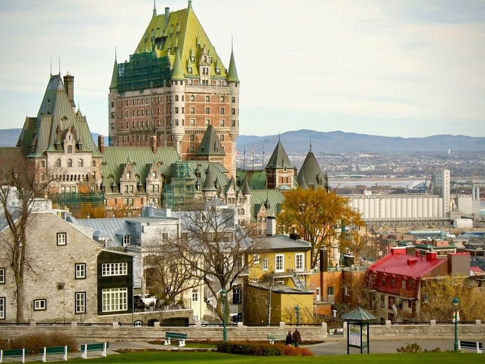
Montmorency Park National Historic Site
Montmorency Park National Historic Site is a picturesque green space nestled between Upper and Lower Town in Quebec City. Once home to the Parliaments of Lower Canada, Canada East, and Quebec, the park now stands as a national historic site with century-old trees, walkways, and statues that tell the story of its political and military significance. Visitors can explore the remnants of defensive walls along the southeastern edge while enjoying panoramic views of Lower Town and the river.
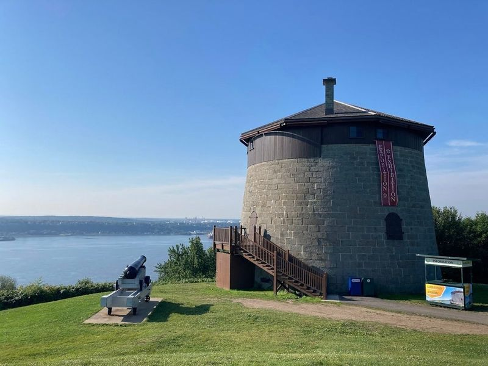
The Battlefields Park
The Battlefields Park, also known as Parc des Champs-de-Bataille, spans 267 acres and was the site of a significant battle between French and British forces in 1759. The park features public meadows, trees, and monuments commemorating the historic clash. Today, it serves as a popular public park with open green spaces used for various events and concerts. Visitors can enjoy picnics, recreational areas, and views of the St.
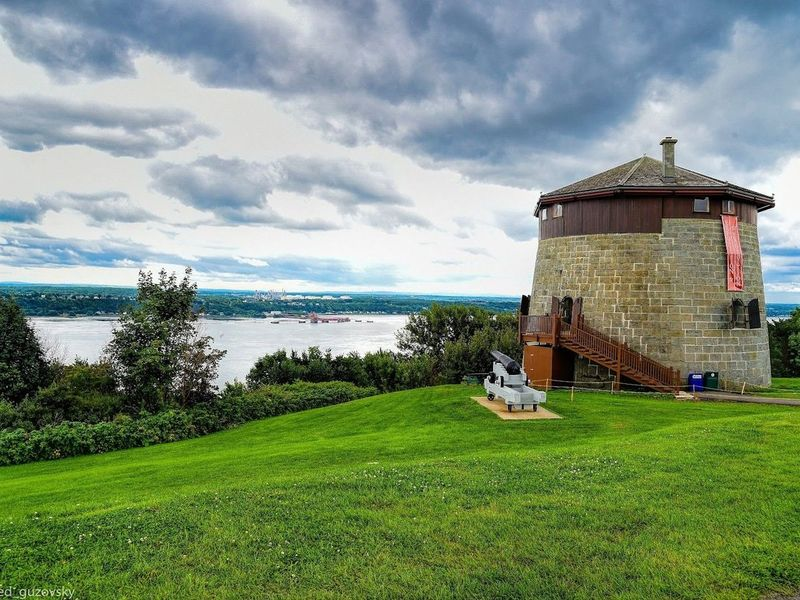
Plains of Abraham
The Plains of Abraham is a historic park in Quebec, Canada, known for its pivotal role in the Seven Years' War. This urban park was the site of the famous Battle of Quebec in 1759, where British forces defeated the French. The park features gardens, an ice rink, and Martello Towers with family-friendly activities. Visitors can explore the Museum of the Plains of Abraham to learn about Canada's history through multimedia displays.
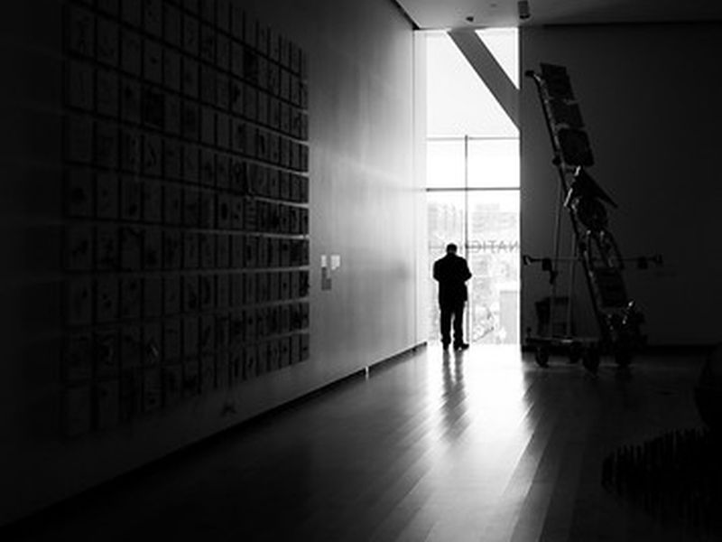
Musée national des beaux-arts du Québec
Musée national des beaux-arts du Québec is listed among principal sites for Quebec City within Canada. Municipal and regional heritage listings document its place in the historic centre and travellers routes through Quebec City. Musée national des beaux-arts du Québec is listed among principal sites for Quebec City within Canada.
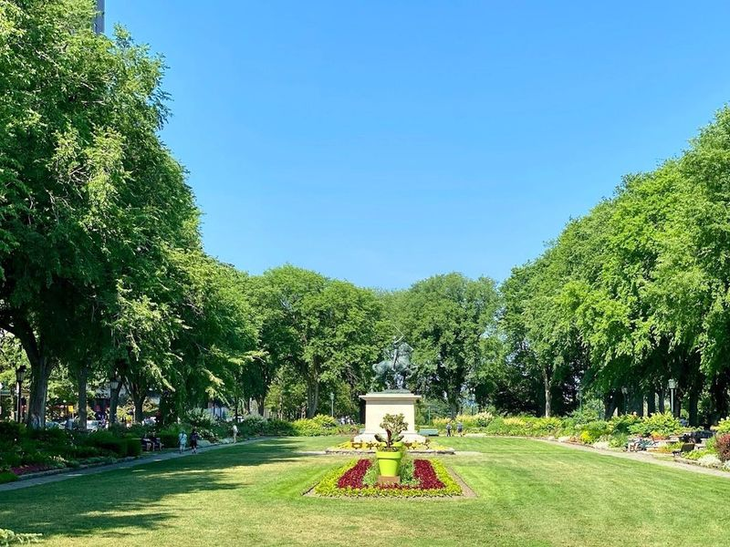
Joan of Arc Garden
The Joan of Arc Garden, established in 1938, is a beautifully landscaped park that combines classical French and English flower-garden styles. Located on the Plains of Abraham, a significant site for the 1759 battle between British and French forces, this lush urban park offers a perfect setting for picnics and also features historical attractions such as the Quebec Martello Towers.
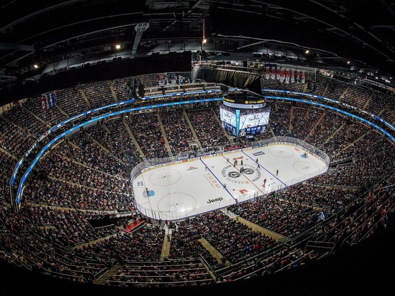
Videotron Centre
Videotron Centre is a modern indoor complex in Quebec City that hosts ice hockey games and major musical performances throughout the year. Although the city no longer has an NHL team since the departure of the Quebec Nordiques, visitors can still catch exciting hockey action with the minor league team Remparts de Quebec playing at this venue. The facility offers easy access, ample restrooms, and convenient food and drink vendors.
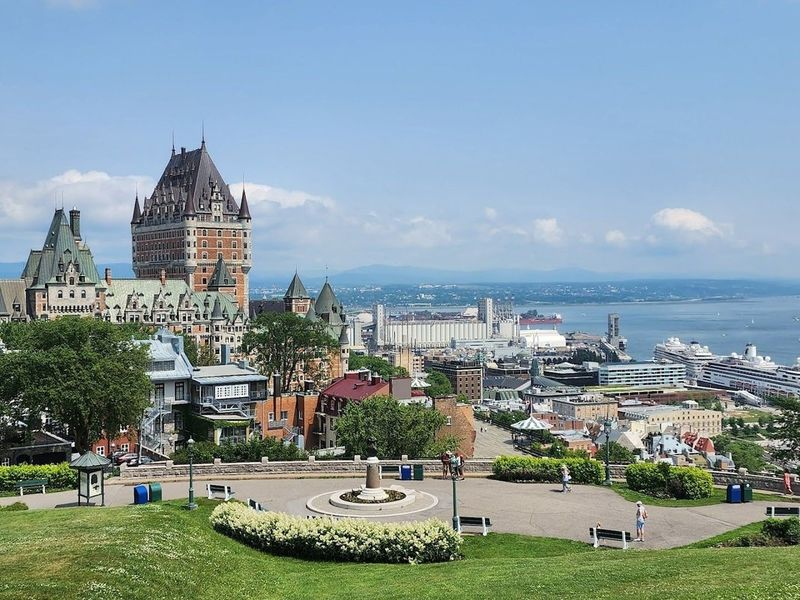
Pierre-Dugua-De-Mons Terrace
Pierre-Dugua-De-Mons Terrace, located in Quebec City, is a picturesque park lookout offering views of the city, Chateau Frontenac, Dufferin Terrace, and the St. Lawrence River. Named after Pierre Dugua de Mons, a key figure in Quebec's founding, this terrace provides a panoramic view that is perfect for landscape photography and sunset watching.
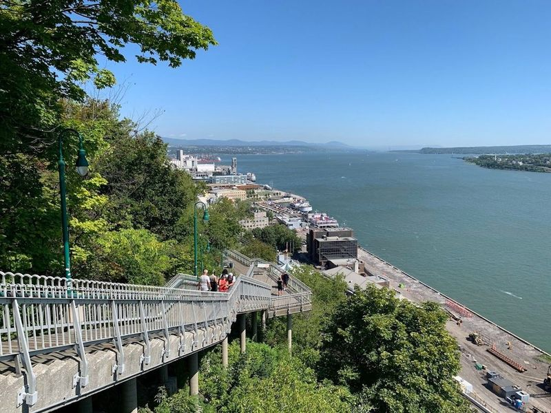
The Citadelle of Québec
The Citadelle of Québec is a historic complex that includes an active fort, a museum, and the traditional Changing of the Guard ceremony. However, during certain times of the year, this ceremony is replaced by a musical performance by the Royal 22nd Regiment Band. The citadel has been an important part of Quebec's history since it was rebuilt by the British in the 19th century.
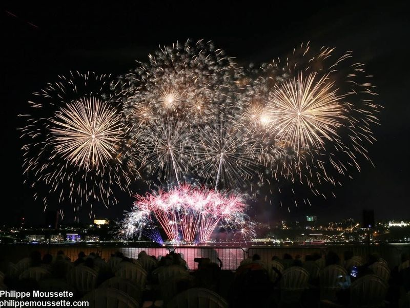
Place des Canotiers
Nestled along the picturesque St. Lawrence River, Place des Canotiers is a beautifully landscaped plaza that invites visitors to unwind and soak in the views of Old Quebec City. This public square features lush lawns, charming walkways, and a delightful fountain with water jets perfect for cooling off during warm summer days. The area is particularly enchanting in the fall when the foliage transforms into a tapestry of colors.
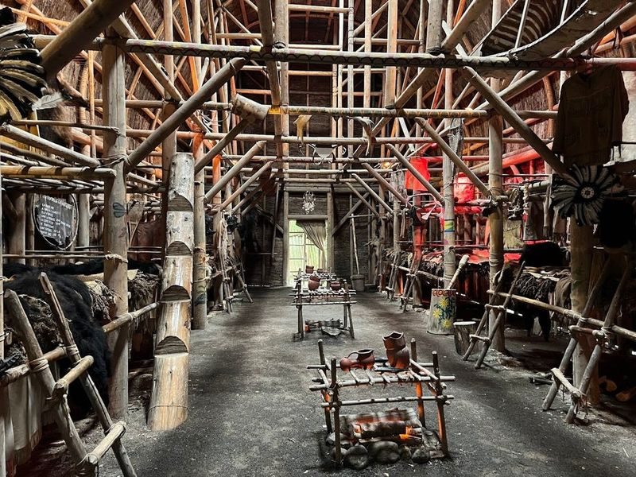
Site Traditionnel Huron Onhoüa Chetek8e
At the Site Traditionnel Huron Onhoüa Chetek8e, visitors are warmly greeted by a guide dressed in traditional attire, ready to take you on an immersive journey through a beautifully reconstructed Huron-Wendat village. Here, explore significant structures like a giant teepee and longhouse, as well as tools such as the smokehouse and drying racks used for meat preservation.
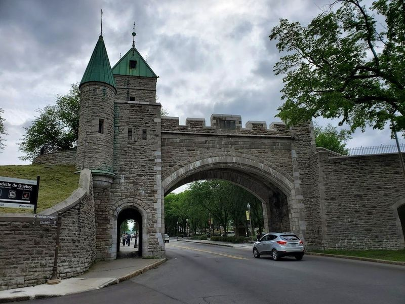
St. Louis Gate
St. Louis Gate is a significant entry point in the fortified walls that enclose Quebec City's Old Town, separating it from the rest of the city. It offers a glimpse into history and provides access to the only walled city north of Mexico. The gate is located near attractions such as statues of famous personalities and a war monument, making it an part of exploring old Quebec. Visitors can also enjoy beautiful nighttime views and climb up on the wall to admire the surrounding cityscape.
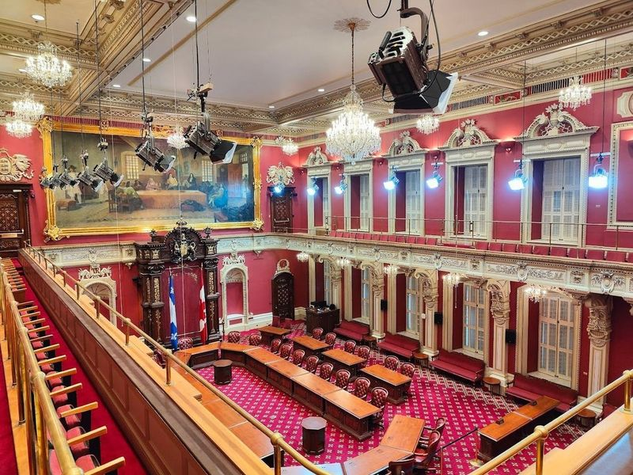
Parliament Building
The Parliament Building, located in Quebec City's St. Jean Baptiste district, is a Second Empire-style structure surrounded by beautiful gardens. Dating back to the late 19th century, it serves as an important center of politics and offers free guided tours of its well-preserved interior with impressive architecture. The grounds are adorned with numerous monuments and 26 bronze statues that pay homage to key figures in Quebec's political history.
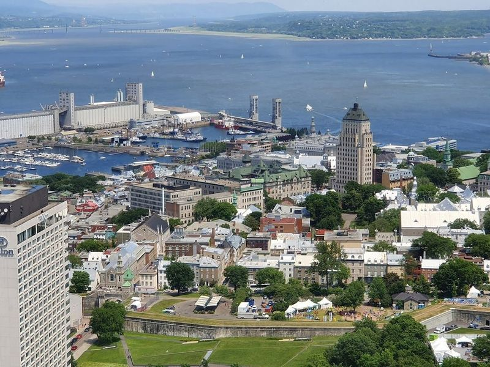
Observatoire de la Capitale
The Observatoire de la Capitale, located on the 31st floor of the Marie-Guyart Building, offers a 360-degree view of Quebec City. As the city's tallest skyscraper at 132m, it provides an unparalleled vantage point to admire historic landmarks such as Old Quebec and Cap Diamant, as well as scenic features like the St. Lawrence River and the Louise Basin marina.
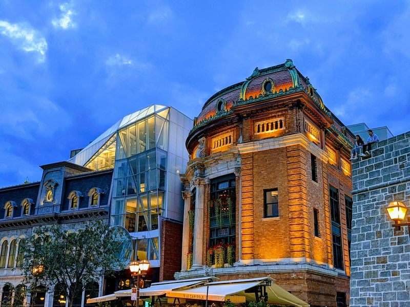
Théâtre Capitole
Théâtre Capitole is a historic performing-arts center located just outside the Old Town of Quebec. The classic Beaux-Arts building offers live music, plays, musicals, and more in a setting reminiscent of the old west. Visitors have praised the venue for its spacious and comfortable seating, with even balcony seats providing fantastic views of performances.